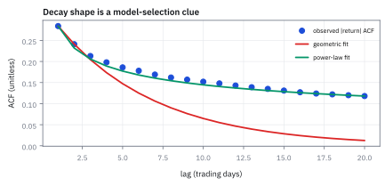

16.1 Stationarity and the Autocorrelation Function
Autocorrelation วัดว่าค่าวันนี้ยังจำค่าเมื่อ $k$ วันก่อนได้แค่ไหน และตัวเลขนี้มีความหมายก็ต่อเมื่อกฎของข้อมูลไม่เปลี่ยนตามวันที่ ซึ่งผลตอบแทนผ่าน แต่ราคาไม่ผ่าน
เทรดเดอร์หลายคนเชื่อว่าตลาดมี “แรงส่ง” คือวันที่ราคาขึ้นมักตามด้วยวันที่ขึ้นอีก ถ้าจริง ก็แค่ซื้อหลังวันขึ้นแล้วรอกำไร ทีมวิจัยจึงลองตรวจความเชื่อนี้กับดัชนีหุ้นสหรัฐ (ดัชนีคือราคาเฉลี่ยถ่วงน้ำหนักของหุ้นใหญ่หลายร้อยตัว ใช้แทน “ทั้งตลาด”)
ข้อมูลที่ใช้คือผลตอบแทนรายวัน $r_t$ คือราคาวันที่ $t$ เปลี่ยนไปกี่ % จากวันก่อน ทีมวัดตัวเลขชื่อ autocorrelation ที่ระยะหนึ่งวัน เขียนว่า $\hat\rho_1$ มันเป็นตัวเลขระหว่าง −1 ถึง +1 ที่บอกว่าค่าเมื่อวานกับค่าวันนี้ไปทางเดียวกันแค่ไหน ค่าบวกแปลว่ามักไปทางเดียวกัน ค่าลบแปลว่ามักสวนกัน ค่าศูนย์แปลว่าเมื่อวานไม่บอกอะไรเกี่ยวกับวันนี้ (หมวก ^ บอกว่าเป็นค่าที่ประมาณจากข้อมูล)
ของที่รู้ (ตัวเลขสมมติ แต่ขนาดใกล้เคียงข้อมูลจริง)
- จำนวนวันในข้อมูล $n=1{,}000$ วันทำการ หรือราว $1{,}000/252\approx4$ ปี (ตลาดหุ้นสหรัฐเปิดราว 252 วันต่อปี)
- autocorrelation ของผลตอบแทน $r_t$ ซึ่งดูทิศทาง ว่าขึ้นหรือลง: $\hat\rho_1(r)=+0.031$
- autocorrelation ของขนาดการขยับ $|r_t|$ ซึ่งทิ้งเครื่องหมาย ดูแค่ว่าวันนั้นขยับแรงหรือเบา: $\hat\rho_1(|r|)=+0.284$
เทรดเดอร์คนหนึ่งเห็นแล้วบอกว่า “บวกทั้งคู่ วันขึ้นมักตามด้วยวันขึ้น ซื้อตามได้เลย”
ตัวเลขไหนเป็นสัญญาณจริง และมันบอกเรื่องทิศทาง หรือเรื่องความเสี่ยง?
ลองตอบก่อนเปิดเฉลย
ต้องรู้ก่อนว่า ถ้าตลาดไม่มีความจำเลย ค่า $\hat\rho_1$ จาก 1,000 วันจะแกว่งรอบศูนย์กว้างแค่ไหนจากความบังเอิญล้วน ๆ ความกว้างนี้เรียกว่า standard error (SE) ขั้นที่ 4 จะพิสูจน์ว่า $\mathrm{SE}\approx1/\sqrt n$ และค่าที่เกิดจากความบังเอิญจะตกในแถบ $\pm1.96\,\mathrm{SE}$ ราว 95% ของเวลา (1.96 มาจากรูประฆัง Normal)
ต่อไปวัดว่าแต่ละตัวเลขอยู่ห่างศูนย์กี่ SE ตัวเลขนี้เรียกว่าค่า t ถ้าค่า t เกิน 1.96 จึงถือว่าแยกจากความบังเอิญได้
+0.031 อยู่ในแถบ ±0.062 ค่า t แค่ 0.98 จึงแยกจากศูนย์ไม่ได้ ถ้าความจำจริงมีขนาด 0.031 พอดี ต้องมีข้อมูลมากพอให้เส้นเกณฑ์ $1.96/\sqrt n$ หดลงเหลือ 0.031 ซึ่งต้องใช้ข้อมูลราว 3,998 วัน หรือเกือบ 16 ปีที่ปีละ 252 วันทำการ
ส่วน +0.284 อยู่ห่างศูนย์เกือบ 9 SE จึงเป็นสัญญาณจริง ขั้นที่ 6 จะรวมสาม lag แรก (lag คือระยะห่างเป็นวันของคู่ที่จับ) เป็นตัวเลขเดียวชื่อ Ljung–Box ได้ 184.8 เทียบกับเกณฑ์ 7.815 ผลยืนยันแบบเดียวกัน
แต่ +0.284 เป็นความจำของขนาด มันบอกว่าวันที่ขยับแรงมักตามด้วยวันที่ขยับแรง ไม่ได้บอกว่าขึ้นหรือลง สรุปคือ ความเสี่ยงพยากรณ์ได้ ทิศทางไม่ได้ คำแนะนำ “ซื้อตาม” จึงไม่มีหลักฐานรองรับ
ภาพรวมก่อนลงสูตร
หน้าก่อน ๆ ส่วนใหญ่ถือว่าผลตอบแทนแต่ละวันอิสระต่อกัน คือรู้ค่าเมื่อวานแล้วก็ไม่ช่วยเดาค่าวันนี้ หน้านี้ถามกลับว่า ค่าวันนี้ยัง “จำ” ค่าเมื่อวานได้แค่ไหน
เครื่องมือที่ใช้ชื่อ autocorrelation function หรือ ACF ความคิดของมันง่าย จับคู่ “วันนี้กับเมื่อวาน” ทุกคู่ในข้อมูล แล้วดูว่าคู่ส่วนใหญ่ไปทางเดียวกันหรือสวนกัน ถ้าจับคู่ที่ห่างกัน $k$ วันแทน ก็ได้ ACF ที่ระยะ $k$ ระยะห่างนี้เรียกว่า lag ผลที่ได้คือ correlation (ตัวเลขระหว่าง −1 ถึง +1 ที่บอกว่าสองอย่างขึ้นลงไปด้วยกันแค่ไหน) ของข้อมูลกับตัวมันเองที่เลื่อนไป $k$ วัน
การเอาคู่จากทุกช่วงเวลามาเฉลี่ยรวมเป็นตัวเลขเดียวมีเงื่อนไข ทุกคู่ต้องมาจากกฎเดียวกัน คือค่าเฉลี่ยและความกว้างของการแกว่งต้องไม่เปลี่ยนไปตามวันที่ เงื่อนไขนี้ชื่อ stationarity รูปด้านล่างแสดงว่าทำไมนักวิเคราะห์จึงวิเคราะห์ผลตอบแทน ไม่ใช่ราคา ราคาเดินไปแล้วไม่กลับ และช่วงที่ราคาอาจไปถึงกว้างขึ้นเรื่อย ๆ ตามเวลา ส่วนผลตอบแทนแกว่งรอบศูนย์ในแถบเดิมทุกวัน
ผลตอบแทนรายวันของหุ้นจริงมีลักษณะสี่ข้อที่พบซ้ำแทบทุกตลาด นักวิจัยเรียกว่า stylized facts
- ACF ของผลตอบแทนแทบเป็นศูนย์ ทิศเมื่อวานไม่บอกทิศวันนี้ ข้อยกเว้นคือข้อมูลรายนาที ซึ่งราคาที่บันทึกเด้งไปมาระหว่างราคาที่คนเสนอซื้อ (bid) กับราคาที่คนเสนอขาย (ask)
- ACF ของขนาดการขยับ $|r_t|$ และของ $r_t^2$ เป็นบวกชัด และอยู่ได้นานหลายสัปดาห์ โดยของ $|r_t|$ ชัดกว่า
- หางหนากว่า Normal มาก คือวันที่ขยับแรงสุดขั้วเกิดบ่อยกว่าที่รูประฆัง Normal ทำนาย ตัววัดคือ kurtosis ซึ่ง Normal มีค่า 3 ข้อมูลจริงปี 2001–2017 ให้ kurtosis ของผลตอบแทนรายวันราว 11.4 สำหรับ SPY (กองทุนที่ซื้อขายเหมือนหุ้นและวิ่งตามดัชนี S&P 500) และราว 7.1 สำหรับหุ้น IBM
- ถ้ารวมผลตอบแทนเป็นรายสัปดาห์หรือรายเดือน การแจกแจงจะเข้าใกล้ Normal มากขึ้น
หน้านี้สร้างเครื่องมือสำหรับสองข้อแรก ตามลำดับนี้
- นับ ACF ด้วยมือจากข้อมูลหกวัน แล้วเขียนเป็นสูตร
- ดูว่าทำไมต้องใช้ผลตอบแทน ไม่ใช่ราคา
- หาว่าความบังเอิญล้วน ๆ สร้างค่า ACF ได้กว้างแค่ไหน แล้วรวมหลาย lag เป็นตัวเลขเดียวด้วย Ljung–Box
- ตัดสินโจทย์เปิด แล้วดูว่าความจำของขนาดจางลงแบบไหน
- ดูว่าความจำเปลี่ยนกฎ “คูณด้วยรากของเวลา” ที่ใช้แปลงความผันผวนรายวันเป็นรายปีอย่างไร
รูป — ราคาเดินไปไม่กลับ ผลตอบแทนแกว่งในแถบเดิม
ศัพท์ที่ใช้ในหัวข้อนี้
- Time series
- ข้อมูลที่เรียงตามเวลา ลำดับของมันมีความหมาย ถ้าสลับวันกันก็กลายเป็นข้อมูลคนละชุด เช่นราคาปิดรายวันของหุ้น
- ผลตอบแทน (return)
- ราคาเปลี่ยนไปกี่ % จากวันก่อน หน้านี้ใช้ผลตอบแทน log คือ $r_t=\ln(P_t/P_{t-1})$ ถ้าการขยับเล็ก ค่านี้ใกล้กับ % ปกติมาก และข้อดีคือบวกกันข้ามวันได้ตรง ๆ
- Correlation
- ตัวเลขระหว่าง −1 ถึง +1 ที่วัดว่าสองตัวแปรขึ้นลงไปด้วยกันแค่ไหน +1 คือไปทางเดียวกันเป็นเส้นตรงพอดี −1 คือสวนกันพอดี 0 คือไม่มีแนวโน้มเป็นเส้นตรง
- Lag
- ระยะห่าง นับเป็นจำนวนช่วงเวลา ระหว่างสองค่าที่จับคู่กัน ในข้อมูลรายวัน lag 1 คือคู่เมื่อวานกับวันนี้ lag 20 คือคู่ที่ห่างกันราวหนึ่งเดือนทำการ
- Autocorrelation function (ACF)
- ชุดของ correlation ระหว่างข้อมูลกับตัวมันเองที่เลื่อนไป $k$ ช่วง สำหรับ $k=1, 2, \ldots$ ใช้ดูว่าความจำยาวแค่ไหนและจางลงแบบไหน ก่อนเลือกแบบจำลอง
- Weak stationarity
- เงื่อนไขที่ค่าเฉลี่ย variance และ covariance ของคู่ที่ห่างกัน $k$ วันไม่ขึ้นกับวันที่ มีไว้เพื่อให้การเอาคู่จากทุกช่วงเวลามาเฉลี่ยรวมเป็นตัวเลขเดียวมีความหมาย
- White noise
- ข้อมูลที่ค่าเฉลี่ยคงที่และ ACF เป็นศูนย์ทุก lag ใช้เป็นเส้นฐานของ “ไม่มีความจำเชิงเส้น” และเป็นสิ่งที่ residual (ส่วนที่แบบจำลองอธิบายไม่ได้) ของแบบจำลองที่ดีควรเป็น
- Volatility clustering
- วันที่ขยับแรงมักอยู่ติดกัน วันเงียบก็อยู่ติดกัน เห็นเป็น ACF บวกของ $|r_t|$ ทั้งที่ ACF ของ $r_t$ แทบเป็นศูนย์ ปรากฏการณ์นี้เป็นเหตุผลที่ต้องสร้างแบบจำลองของความผันผวน
- Standard error (SE)
- SD ของตัวเลขที่ประมาณจากข้อมูล บอกว่าถ้าเก็บข้อมูลชุดใหม่ที่ยาวเท่าเดิม ตัวเลขนั้นจะแกว่งไปได้แค่ไหน ตัวเลขที่ประมาณได้หารด้วย SE ของมันเรียกว่าค่า t
- Ljung–Box test
- สถิติที่รวม ACF กำลังสองของหลาย lag เป็นตัวเลขเดียว แล้วเทียบกับการแจกแจง chi-square ใช้แทนการไล่ดูทีละ lag ซึ่งให้สัญญาณหลอกได้ง่าย
สัญลักษณ์และหน่วย
| สัญลักษณ์ | ความหมาย | หน่วย |
|---|---|---|
| $r_t$ | ผลตอบแทนของวันที่ $t$ | ทศนิยมต่อวัน |
| $|r_t|$ | ขนาดของการขยับ ไม่สนทิศ | ทศนิยมต่อวัน |
| $\bar r$ | ค่าเฉลี่ยของผลตอบแทนในข้อมูล | ทศนิยมต่อวัน |
| $\mu,\ \sigma$ | ค่าเฉลี่ยจริง และ SD จริงของผลตอบแทนรายวันในแบบจำลอง | ทศนิยมต่อวัน |
| $P_t$ | ราคาปิดของวันที่ $t$ | ดอลลาร์ |
| $n,\ k$ | จำนวนวันในข้อมูล และ lag | วัน |
| $\gamma_k$ | autocovariance ที่ lag $k$; $\gamma_0$ คือ variance | ทศนิยม² |
| $\rho_k,\ \hat\rho_k$ | ACF ของแบบจำลอง และค่าที่ประมาณจากข้อมูล | ไม่มีหน่วย |
| $h,\ Q(h)$ | จำนวน lag ที่รวม (หรือจำนวนวันที่รวมผลตอบแทน) และค่า Ljung–Box | จำนวน และไม่มีหน่วย |
ขั้นที่ 1 — หกวันด้วยมือ: เลื่อนอนุกรมหนึ่งวันแล้วจับคู่
เริ่มจากข้อมูลเล็กที่สุดที่นับด้วยมือได้ เพื่อให้เห็นว่า ACF ทำอะไรกับตัวเลขจริง ๆ คำถาม “เมื่อวานบอกอะไรเกี่ยวกับวันนี้” แปลเป็นการคำนวณได้สามขั้น
- หาค่าเฉลี่ย $\bar r$ แล้วหักออกจากทุกวัน เหลือแค่ว่าแต่ละวันสูงหรือต่ำกว่าปกติเท่าไร ส่วนนี้เรียกว่าการเบี่ยง
- จับคู่ทุกวันกับวันก่อนหน้า แล้วคูณการเบี่ยงของสองวันในคู่ ถ้าสองวันเบี่ยงไปทางเดียวกัน ผลคูณเป็นบวก ถ้าสวนกัน ผลคูณเป็นลบ ผลรวมของผลคูณทุกคู่เรียกว่า $N_1$
- หาร $N_1$ ด้วย $D$ คือผลรวมกำลังสองของการเบี่ยงทุกวัน เพื่อให้ผลไม่มีหน่วย และอยู่ระหว่าง −1 ถึง +1 (ขั้นที่ 2 อธิบายว่าทำไม)
ข้อมูลหกวันข้างล่างเป็นตัวเลขสมมติ หน่วย %
ทิศทางไม่มีความจำ แต่ความแรงของการขยับอาจมี เพื่อดูเรื่องนี้ ใช้ตัวเลขชุดเดิมแต่ทิ้งเครื่องหมาย ให้ $x=|r|$ ซึ่งเหลือแค่ขนาดของการขยับ แล้วนับแบบเดียวกัน
ชุดแรกดูทิศทาง วันที่ +3 ตามหลังวันที่ +2 ได้ผลคูณ +6 แต่วันที่ −3 ตามหลังวันที่ +3 ได้ −9 คู่ที่ไปทางเดียวกันกับคู่ที่สวนกันหักกันพอดี เหลือศูนย์ ทิศของเมื่อวานจึงไม่บอกทิศของวันนี้เลย
ชุดที่สองดูขนาด วันแรง (3, 3) อยู่ติดกัน วันเบา (1, 1) ก็อยู่ติดกัน ผลคูณของการเบี่ยงจึงเป็นบวก และได้ 0.5 นี่คือ volatility clustering ในหกตัวเลข มันยังเป็นตัวอย่างว่า correlation เป็นศูนย์ไม่ได้แปลว่าอิสระกัน เพราะทิศมี correlation ศูนย์ แต่ขนาดของวันนี้ยังขึ้นกับขนาดของเมื่อวาน
รูป — คู่ “เมื่อวาน–วันนี้” ห้าคู่ ของทิศทางและของขนาด
ขั้นที่ 2 — เขียนการนับเป็นสูตร
การนับหกวันทำแค่ lag 1 ตอนนี้จะเขียนให้ใช้กับ lag $k$ ใดก็ได้ และแยกให้ชัดว่าอะไรเป็นค่าของแบบจำลอง อะไรเป็นค่าที่คำนวณจากข้อมูล
- ในแบบจำลอง ผลตอบแทนมีค่าเฉลี่ยจริง $\mu$ ซึ่งเราไม่รู้ เวลาคำนวณจากข้อมูลจึงใช้ค่าเฉลี่ยของข้อมูล $\bar r$ แทน
- $\mathbb E[\cdot]$ คือค่าคาดหมาย หรือค่าเฉลี่ยระยะยาวถ้าทำซ้ำได้ไม่รู้จบ
- $\gamma_k$ (autocovariance) คือค่าคาดหมายของผลคูณการเบี่ยงของสองวันที่ห่างกัน $k$ วัน เมื่อ $k=0$ มันคือ variance
- $\rho_k$ คือ $\gamma_k$ หารด้วย $\gamma_0$ และ $\hat\rho_k$ คือสูตรที่นับมือไปแล้วในขั้นที่ 1 เขียนให้ทั่วไป
สุดท้ายลองใช้สูตรกับ lag 2 ของข้อมูลหกวันชุดเดิม
ทำไมต้องหารด้วย $\gamma_0$? เพราะ $\gamma_k$ กับ $\gamma_0$ มีหน่วยเดียวกัน (%²) หารกันแล้วหน่วยตัดกันหมด ตัวเลขจึงเทียบข้ามสินทรัพย์และข้าม lag ได้ ที่ lag 2 ข้อมูลหกวันเหลือแค่สี่คู่ คือวันที่ 3 กับ 1, 4 กับ 2, 5 กับ 3 และ 6 กับ 4 ผลคูณจึงเป็น $(-3)(2)$, $(-2)(3)$, $(1)(-3)$ และ $(-1)(-2)$
สังเกตว่าตัวส่วนเป็นผลรวมกำลังสองของทั้ง $n$ วันทุก lag แม้ตัวเศษมีแค่ $n-k$ คู่ ทำไมไม่หารด้วยจำนวนคู่ที่มีจริง? เพราะตัวส่วนแบบนี้รับประกันว่า $|\hat\rho_k|\le1$ เสมอ ตามอสมการ Cauchy–Schwarz (ขนาดของinner product ไม่เกินผลคูณของความยาวสองเวกเตอร์) สิ่งที่ต้องแลกคือค่าที่ lag ไกล ๆ ถูกดึงเข้าหาศูนย์เล็กน้อย
ค่า −0.464 จากแค่สี่คู่ดูใหญ่ แต่จะใหญ่พอหรือไม่ ต้องรอแถบความบังเอิญในขั้นที่ 4
ขั้นที่ 3 — ตัวเลขนี้มีความหมายเมื่อกฎไม่ขึ้นกับวันที่
สูตร ACF เอาคู่จากทุกวันมาเฉลี่ยรวมเป็นตัวเลขเดียว แต่ถ้าปีแรกกับปีหลังมีค่าเฉลี่ยคนละระดับ ค่าเฉลี่ยรวมก็ไม่ใช่ของปีไหนเลย และตัวเลขที่ได้ก็ไม่มีความหมาย เราจึงต้องมีเงื่อนไขว่ากฎของข้อมูลไม่ขึ้นกับวันที่
เงื่อนไขนี้ชื่อ weak stationarity มันเป็นนิยามที่เราเลือกใช้ ไม่ใช่ผลที่พิสูจน์ มีสามข้อที่ต้องจริงทุกวัน $t$ คือค่าเฉลี่ยคงที่ variance คงที่ และ covariance ของคู่ที่ห่างกัน $k$ วันขึ้นกับ $k$ อย่างเดียว จากนั้นลองตรวจ log ราคากับเงื่อนไขนี้ โดยให้ $\sigma$ คือ SD ของผลตอบแทนรายวัน
log ราคาวันนี้เท่ากับ log ราคาวันแรกบวกผลตอบแทน log ทุกวันที่ผ่านมา เพราะแต่ละวัน $\ln P_t-\ln P_{t-1}=r_t$ ถ้าผลตอบแทนอิสระกัน และมี variance $\sigma^2$ เท่ากันทุกวัน variance ของผลรวม $t$ ก้อนก็คือ $t\sigma^2$ ซึ่งโตไม่หยุด log ราคาจึงไม่ผ่านเงื่อนไข variance คงที่ ที่ $\sigma=1.2\%$ SD หลัง 1 วันคือ 1.2% แต่หลัง 1,000 วันคือ 37.9% นี่คือกรวยที่กว้างขึ้นในรูปแรกของหน้า
ข้อนี้ตรงกับแบบจำลองราคาหุ้นมาตรฐานชื่อ geometric Brownian motion ในแบบจำลองนั้น $\ln(P_{t+s}/P_t)$ เป็น Normal ที่ค่าเฉลี่ย $(\mu-\tfrac12\sigma^2)s$ และ variance $\sigma^2s$ โดย $\mu$ ตรงนี้คือ drift หรืออัตราเติบโตเฉลี่ยของราคา สองค่านี้ขึ้นกับความยาวช่วง $s$ เท่านั้น ไม่ขึ้นกับว่าเริ่มวันไหน ผลตอบแทนของช่วงที่ยาวเท่ากันจึงมีกฎเดียวกันทุกช่วง ส่วนระดับราคาไม่มี
volatility clustering ไม่ได้ขัดกับ stationarity ถ้ามองจากไกล ๆ โดยไม่รู้อะไรเลย ทุกวันมี variance เท่ากัน แต่ถ้ารู้แล้วว่าเมื่อวานขยับแรง variance ของพรุ่งนี้ก็สูงขึ้น variance แบบแรกคงที่ได้ ขณะที่แบบหลังขยับขึ้นลงตามข่าวล่าสุด GARCH จะแสดงเรื่องนี้ด้วยตัวเลข
ลองดูว่าถ้าลืมเงื่อนไขนี้ แล้วหา ACF ของราคาตรง ๆ จะเกิดอะไรขึ้น โค้ดท้ายหน้าสร้างราคาแบบ random walk 1,000 วัน (random walk คือราคาที่แต่ละวันบวกการขยับสุ่มใหม่ที่ไม่ขึ้นกับอดีต ในที่นี้ SD 1.2% ต่อวัน) ผลตอบแทนของมันจึงไม่มีความจำเลยโดยการสร้าง ผลที่ได้คือ
- ACF ของระดับราคาได้ 0.9955 ที่ lag 1 และยังสูงถึง 0.9156 ที่ lag 20
- ACF ของผลตอบแทนชุดเดียวกันได้แค่ −0.025 ที่ lag 1
ตัวเลข 0.99 ไม่ได้บอกว่าพยากรณ์ราคาได้ มันบอกแค่ว่าราคาวันนี้อยู่ใกล้ราคาเมื่อวาน
รูป — ACF ของระดับราคา เทียบกับ ACF ของผลตอบแทน จากเส้นทางเดียวกัน
ขั้นที่ 4 — ถ้าไม่มีความจำเลย ค่าที่ได้จะแกว่งแค่ไหน
กลับมาที่โจทย์เปิด 0.031 ใหญ่พอไหม? จะตอบได้ต้องรู้ก่อนว่า ถ้าผลตอบแทนไม่มีความจำเลย $\hat\rho_k$ จะแกว่งรอบศูนย์กว้างเท่าไร ความกว้างนี้วัดเป็น SD ของ $\hat\rho_k$ เรียกว่า standard error (SE)
สมมติว่า $r_t$ อิสระกันทุกวัน ค่าเฉลี่ยศูนย์ และ variance $\sigma^2$ เพราะค่าเฉลี่ยจริงเป็นศูนย์ เราละ $\bar r$ ได้ ให้ $\hat\gamma_k$ คือตัวเศษของ $\hat\rho_k$ หารด้วย $n$ ตัวเศษนี้เป็นผลรวมของผลคูณ $r_tr_{t-k}$ จำนวน $n-k$ ก้อน จึงหา variance ของมันได้จากค่าเฉลี่ย variance และ covariance ของแต่ละก้อน
ความคิดหลักคือ ตัวเศษของ $\hat\rho_k$ เป็นผลรวมของก้อนเล็ก ๆ ที่แต่ละก้อนมีค่าเฉลี่ยศูนย์และ variance $\sigma^4$ ค่าเฉลี่ยเป็นศูนย์เพราะความอิสระ ค่าเฉลี่ยของผลคูณจึงเท่ากับผลคูณของค่าเฉลี่ย ซึ่งเป็นศูนย์
จุดที่คนมักสะดุดคือ ทำไมสองก้อนต่างวันกันจึงไม่มี covariance ทั้งที่อาจใช้วันเดียวกันร่วม ลองดูสี่ตัวที่คูณกัน $r_tr_{t-k}r_sr_{s-k}$ ถ้า $t\gt s$ ตัว $r_t$ เป็นวันล่าสุด มันปรากฏครั้งเดียวและอิสระจากอีกสามตัว ค่าเฉลี่ยของทั้งก้อนจึงเป็น $\mathbb E[r_t]$ คูณกับอะไรสักอย่าง ซึ่งเท่ากับศูนย์ variance ของผลรวม $n-k$ ก้อนจึงเท่ากับผลรวมของ variance ตรง ๆ
พอหารด้วย $\sigma^2$ ตัว $\sigma^4$ บนกับล่างก็ตัดกัน ผลจึงไม่ขึ้นกับว่าข้อมูลผันผวนแค่ไหน แถบ 95% คือ $\pm1.96/\sqrt n$ คนทำงานมักปัดเป็น $\pm2/\sqrt n$ ตัวเลข 1.96 คือจุดที่หางสองข้างของNormalรวมกันเหลือ 5% ที่ 1,000 วันจึงได้ ±0.062
ข้อมูลหกวันในขั้นที่ 1 แทนสูตรได้ $\pm1.96/\sqrt6\approx\pm0.80$ ค่า −0.464 จึงยังอยู่ในแถบ แต่หกวันน้อยเกินกว่าจะเชื่อแถบที่อาศัย Normal ตัวอย่างนั้นมีไว้ฝึกคำนวณเท่านั้น
ข้อควรระวังหนึ่งข้อ ที่มาของแถบนี้ใช้สมมติฐานว่า “อิสระ” ซึ่งแรงกว่าแค่ “correlation เป็นศูนย์” ผลตอบแทนจริงไม่อิสระ เพราะมี volatility clustering ค่าเฉลี่ยของ $r_t^2r_{t-k}^2$ จึงมากกว่า $\sigma^4$ และแถบที่ถูกต้องจะกว้างกว่า ±0.062 ซอฟต์แวร์สถิติที่ดีมีแถบแบบ robust (ทนต่อการที่สมมติฐานนี้ไม่จริง) ให้เลือกใช้
ขั้นที่ 5 — ดู 20 แท่งพร้อมกัน แล้วเลือกแท่งที่หลุด คือการหลอกตัวเอง
กราฟ ACF ที่ใช้กันทั่วไปแสดง 20 แท่งพร้อมกัน แท่งละหนึ่ง lag พร้อมแถบ ±0.062 แม้ข้อมูลไม่มีความจำ แต่ละแท่งก็ยังมีโอกาส 5% ที่จะหลุดแถบโดยบังเอิญ การไล่ดูทั้ง 20 แท่งแล้วหยิบแท่งที่หลุดมาเล่า จึงเหมือนทดสอบ 20 ครั้งแล้วรายงานแค่ครั้งที่ชนะ ปัญหานี้ชื่อ multiple testing
ให้ $A$ เป็นจำนวนแท่งที่หลุดแถบ เมื่อข้อมูลเป็น noise ล้วน (ตัวเลขสุ่มที่ไม่มีความจำเลย) เมื่อไม่มีความจำ 20 แท่งเกือบอิสระกัน จึงคูณโอกาสของแต่ละแท่งเข้าด้วยกันได้
โอกาสที่ไม่มีแท่งไหนหลุดเลยคือ 0.95 คูณกัน 20 ครั้ง เหลือแค่ราว 36% ข้อมูล noise ล้วนราวสองในสามชุดจึงมีแท่งหลุดอย่างน้อยหนึ่งแท่ง และโดยเฉลี่ยหลุดหนึ่งแท่งพอดี แท่งที่หลุดแท่งเดียวในกราฟ 20 แท่งจึงเป็นสิ่งที่ควรคาดไว้อยู่แล้ว ไม่ใช่การค้นพบ
โค้ดท้ายหน้าลองจริง โดยสร้าง noise ล้วน 1,000 ชุด ชุดละ 1,000 วัน ได้ 61.7% ของชุดที่มีแท่งหลุด และเฉลี่ย 0.949 แท่งต่อชุด ห่างจากสูตร $64.2-61.7=2.5$ จุด ความห่างนี้อยู่ในระดับที่การสุ่มแค่ 1,000 ชุดคลาดได้ เพราะสัดส่วนที่นับจาก $N$ ชุด เมื่อโอกาสจริงคือ $p$ มี SE เท่ากับ $\sqrt{p(1-p)/N}=\sqrt{0.64\times0.36/1000}\approx0.015$ หรือราว 1.5 จุด
รูป — noise ล้วน 1,000 วัน ยังมีแท่งหนึ่งหลุดแถบ
ขั้นที่ 6 — รวมหลาย lag เป็นตัวเลขเดียว: Ljung–Box
ทางแก้ของการเลือกแท่งคือรวมทุก lag เป็นตัวเลขเดียว แล้วเทียบกับเกณฑ์เดียว ทำสองขั้น
- แปลงแต่ละ $\hat\rho_k$ เป็นเลขมาตรฐาน $Z_k$ โดยหารด้วย SE ของมัน ถ้าข้อมูลอิสระ มีการแจกแจงเหมือนกันทุกวัน และมีมากพอ (โดยจำนวน lag $h$ คงที่) $Z_k$ แต่ละตัวเป็น Normal มาตรฐาน (ค่าเฉลี่ย 0 SD 1) โดยประมาณ ตามcentral limit theorem และเกือบอิสระกัน
- ยกกำลังสองแล้วรวม $h$ ตัว ยกกำลังสองเพราะไม่สนว่าแท่งหลุดขึ้นหรือลง ผลรวมกำลังสองของ Normal มาตรฐานที่อิสระกัน $h$ ตัวมีการแจกแจงที่มีชื่อเฉพาะ คือ chi-square ที่มี $h$ องศาอิสระ เขียนว่า $\chi^2_h$
ถ้าใช้ SE $=1/\sqrt n$ จากขั้นที่ 4 ตรง ๆ จะได้ $Q_{\rm BP}$ ซึ่งเรียกว่า Box–Pierce ส่วน Ljung–Box $Q(h)$ ต่างกันแค่ใช้ variance ของ $\hat\rho_k$ ที่ละเอียดกว่า ตัวหาร $n-k$ มาจากจำนวนคู่ที่มีจริงที่ lag $k$ เหตุผลเดียวกับ $(n-k)/n^2$ ในขั้นที่ 4 ส่วน $n+2$ ที่ใช้แทน $n$ มาจากการคำนวณ variance แบบละเอียดของข้อมูล Normal ที่มีจำนวนจำกัด หน้านี้รับส่วนนี้มาใช้โดยไม่พิสูจน์
ตอนนี้แทนค่าโจทย์เปิด ของที่ต้องใช้มีดังนี้ (ACF เป็นตัวเลขสมมติชุดเดียวกับโจทย์เปิด)
- จำนวนวัน $n=1000$ และรวมสาม lag แรก $h=3$
- ACF ของทิศทาง $r_t$ ที่ lag 1, 2, 3 คือ 0.031, −0.018, 0.009
- ACF ของขนาด $|r_t|$ ที่ lag 1, 2, 3 คือ 0.284, 0.241, 0.213
- เกณฑ์ 95% ของ $\chi^2_3$ คือ 7.815 เป็นค่าที่ทำให้พื้นที่ใต้ density ของ chi-square 3 องศาอิสระทางขวาของมันเหลือ 5% ถ้า $Q(3)$ เกินค่านี้ ถือว่ามีหลักฐานของความจำ โค้ดท้ายหน้าหาค่านี้ด้วยการอินทิเกรต density
ตัวเลขในวงเล็บคือ $\hat\rho_k^2/(n-k)$ ทีละ lag โดยดึงตัวคูณ $10^{-7}$ หรือ $10^{-6}$ ออกมาข้างหน้า เช่น $0.031^2/999=9.620\times10^{-7}$ ทิศทางได้ 1.371 ต่ำกว่าเกณฑ์ 7.815 มาก จึงไม่มีหลักฐานของความจำ ขนาดได้ 184.8 สูงกว่าเกณฑ์ราว $184.8/7.815\approx24$ เท่า
การปรับของ Ljung–Box มีผลแค่ไหน? ถ้าเทียบทีละ lag Ljung–Box ใหญ่กว่า Box–Pierce $(n+2)/(n-k)$ เท่า ที่ 1,000 วันตัวคูณนี้แทบเป็น 1 Box–Pierce ของทิศทางได้ $1000\times(0.031^2+0.018^2+0.009^2)=1.366$ ใกล้กับ 1.371 มาก แต่ถ้ามีข้อมูลแค่ 50 วัน ตัวคูณของ lag 1 คือ $52/49=1.061$ และของ lag 3 คือ $52/47=1.106$ คือต่างจาก Box–Pierce 6% ถึง 11%
เวลาใช้ตรวจ residual (ส่วนที่แบบจำลองอธิบายไม่ได้) ของแบบจำลอง ARMA($p,q$) ที่ฟิตมาแล้ว มักลดองศาอิสระเหลือ $h-p-q$ เมื่อ $h\gt p+q$ เพราะการฟิตพารามิเตอร์ $p+q$ ตัวกดให้ ACF ของ residual เล็กลงอยู่แล้ว และถ้า variance เปลี่ยนตามอดีต ต้องใช้รุ่นของการทดสอบที่รองรับความผันผวนที่เปลี่ยนได้ สุดท้าย ผลที่ไม่ปฏิเสธแปลว่า “ยังไม่เห็นความจำเชิงเส้น” ไม่ได้แปลว่า “พิสูจน์แล้วว่าไม่มีความสัมพันธ์ใด ๆ”
ขั้นที่ 7 — ตัดสินโจทย์เปิด: ทิศทางหรือความเสี่ยง
ตอนนี้มีเครื่องมือครบแล้ว กลับไปตอบเทรดเดอร์ในโจทย์เปิดให้ครบทุกตัวเลข
โจทย์ให้อะไรมาบ้าง:
- จำนวนวัน $n=1000$
- ACF ของทิศทาง $r_t$ ที่ lag 1–3 คือ 0.031, −0.018, 0.009
- ACF ของขนาด $|r_t|$ ที่ lag 1–3 คือ 0.284, 0.241, 0.213 และที่ lag 20 คือ 0.118 (ตัวเลขสมมติ)
- จากขั้นก่อน ๆ: แถบความบังเอิญ ±0.062 (ขั้นที่ 4) และ $Q(3)$ (ขั้นที่ 6)
สิ่งที่ต้องคำนวณมีสี่อย่าง
- ค่า t ของแต่ละตัวเลข คือ $\hat\rho/\mathrm{SE}=\hat\rho\sqrt n$ เพราะ $\mathrm{SE}=1/\sqrt n$
- ช่วง 95% รอบค่าที่วัดได้ คือค่าที่วัดได้ ±0.062
- จำนวนวัน $n_{\rm need}$ ที่ทำให้เส้นเกณฑ์ $1.96/\sqrt n$ หดลงเท่ากับค่าที่วัดได้ แก้สมการได้ $n=(1.96/\hat\rho)^2$
- $R^2$ คือสัดส่วนของ variance ที่ทำนายได้ ถ้าใช้ค่าเมื่อวานทำนายค่าวันนี้ด้วยเส้นตรง (เหตุผลที่มันเท่ากับ $\hat\rho^2$ อยู่ใต้คำตอบ)
คำตอบ: ทิศทางไม่มีหลักฐานของความจำ ค่า t แค่ 0.98 และช่วง 95% $(-0.031,\ 0.093)$ ครอบทั้งศูนย์และค่าติดลบ ข้อมูล 1,000 วันจึงบอกไม่ได้แม้แต่ว่าความจำเป็นบวกหรือลบ
ถ้าความจำจริงคือ 0.031 พอดี ต้องใช้ข้อมูลราว 3,998 วัน ค่าขนาดนี้จึงจะแตะเส้น 1.96 SE คิดเป็นเวลาได้ $3{,}998/252\approx15.9$ ปี ตัวเลข 252 คือจำนวนวันทำการต่อปีของตลาดสหรัฐ มาจาก $365-104-9=252$ คือหักเสาร์อาทิตย์ 104 วัน และวันหยุดตลาดราว 9 วัน และแม้มีข้อมูลครบ 15.9 ปี ก็ยังพลาดได้ราวครึ่งหนึ่ง เพราะค่าที่วัดได้จะแกว่งรอบ 0.031 ซึ่งอยู่บนเส้นเกณฑ์พอดี ครึ่งหนึ่งของเวลาจึงตกต่ำกว่าเส้น
ส่วนขนาดอยู่ห่างศูนย์ 8.98 SE ที่ lag 1 และยังห่าง 3.73 SE ที่ lag 20 ซึ่งเกิน 1.96 อยู่ ตัวเลขชุดนี้จึงสนับสนุนให้สร้างแบบจำลองของขนาดการขยับ ไม่ได้สนับสนุนว่าซื้อตามวันขึ้นแล้วจะได้กำไร
$R^2$ บอกว่าความจำแต่ละแบบมีประโยชน์แค่ไหน ทำไม $R^2$ เท่ากับ $\hat\rho^2$? เพราะregression เส้นตรงที่มีตัวแปรเดียวและมี intercept มี $R^2$ เท่ากับ correlation ยกกำลังสองเสมอ ใช้ $r_{t-1}$ ทำนาย $r_t$ จึงอธิบาย variance ได้แค่ 0.096% ส่วน $|r_{t-1}|$ ทำนาย $|r_t|$ ได้ 8.07% มากกว่ากัน $8.07/0.096\approx84$ เท่า
ตรวจเองใน 10 วินาที: $\sqrt{1000}\approx31.62$ ดังนั้น $1.96/31.62\approx0.062$ และ $0.284\times31.62\approx8.98$ ส่วน $3{,}998/252\approx15.9$ ปี
รูป — สาม lag แรกของโจทย์เปิด เทียบแถบความบังเอิญ
ขั้นที่ 8 — ความจำของขนาดจางแบบไหน
รู้แล้วว่าขนาดมีความจำ คำถามถัดไปคือมันจางเร็วแค่ไหน และจางแบบไหน รูปร่างนี้สำคัญ เพราะแบบจำลองแต่ละแบบสร้างรูปร่างได้ต่างกัน ข้อมูลที่ใช้คือ ACF สมมติของ $|r_t|$ ที่ lag 1, 2, 10 และ 20 ซึ่งเท่ากับ 0.284, 0.241, 0.152 และ 0.118 (ทั้ง 20 ค่าอยู่ในโค้ดท้ายหน้า) ลองสองรูปร่าง
- geometric: ลดลงด้วยอัตราคงที่ $\phi$ ทุก lag คือแต่ละ lag เหลือ $\phi$ เท่าของ lag ก่อน หา $\phi$ จาก lag 1 กับ 2
- power law: ลดลงตาม $k^{-d}$ โดย $d$ บอกความเร็วในการลด หา $d$ จาก lag 1 กับ 20
แล้วให้ทั้งสองแบบทำนาย lag 10 และ 20 เทียบกับค่าที่วัดได้
ค่าที่วัดได้ที่ lag 10 และ 20 คือ 0.152 และ 0.118 เส้น geometric ทำนายต่ำกว่าจริง $0.152/0.0648\approx2.3$ เท่าที่ lag 10 และ $0.118/0.0125\approx9.4$ เท่าที่ lag 20 ส่วน power law ทำนาย 0.1446 ที่ lag 10 ใกล้กับค่าจริง 0.152
แต่การเทียบนี้ลำเอียงให้ power law เพราะมันถูกบังคับให้ผ่าน lag 20 พอดี การเทียบที่ยุติธรรมกว่าคือฟิตทั้งสองแบบกับทั้ง 20 lag พร้อมกัน ด้วย least squares (หาเส้นที่ทำให้ผลรวมกำลังสองของความคลาดน้อยที่สุด) บน log ของ ACF ที่ใช้ log เพราะหลัง log ทั้งสองรูปร่างกลายเป็นเส้นตรง คือ $\ln\rho_k$ เป็นเส้นตรงของ $k$ สำหรับ geometric และของ $\ln k$ สำหรับ power law ผลจากโค้ดท้ายหน้าคือเส้น geometric ที่ดีที่สุดยังคลาดได้ถึง 19% ที่บาง lag ส่วน power law คลาดไม่เกิน 4.6% ความจำของขนาดจึงลดเร็วในช่วงแรก แล้วลากหางยาว
แบบจำลองที่มีอัตราความจำตัวเดียวอย่าง AR(1) สร้างรูปนี้ไม่ได้ GARCH เข้าใกล้กว่า เพราะตอบสนองแรงในวันแรกแล้วจางช้า แต่ 20 lag จากข้อมูลชุดเดียวยังไม่พอพิสูจน์ว่ามีความจำยาว ใช้เป็นเบาะแสในการเลือกแบบจำลองเท่านั้น
รูป — geometric decay เทียบ power law บน ACF ของขนาด

ขั้นที่ 9 — ความจำเปลี่ยนกฎ “คูณรากของเวลา”
คนทำงานด้านความเสี่ยงต้องแปลงความผันผวนรายวันเป็นรายสัปดาห์หรือรายปีอยู่เสมอ วิธีที่ใช้กันคือคูณด้วย $\sqrt h$ โดย $h$ คือจำนวนวัน เช่น SD รายวัน 1.2% กลายเป็น $1.2\%\sqrt5=2.683\%$ ต่อห้าวัน กฎนี้ใช้ได้เพราะสมมติว่าผลตอบแทนแต่ละวันไม่มี autocorrelation ถ้ามี ต้องนับ covariance ระหว่างวันด้วย
วิธีนับคือวาดตาราง $h\times h$ ที่ช่องแถว $i$ คอลัมน์ $j$ คือ covariance ของวันที่ $i$ กับวันที่ $j$ variance ของผลรวม $h$ วันเท่ากับผลรวมของทุกช่องในตารางนี้
- ช่องบนเส้นทแยงมี $h$ ช่อง แต่ละช่องคือ $\gamma_0$
- ช่องที่ห่างจากเส้นทแยง $k$ ช่องมี $2(h-k)$ ช่อง คือ $h-k$ ช่องเหนือเส้นทแยงและอีกเท่ากันใต้เส้น แต่ละช่องคือ $\gamma_k$
ตัวอย่างใช้ $h=5$ วัน SD รายวัน 1.2% และให้มีความจำแค่ lag 1 ลองสองกรณี คือ $\rho_1=+0.1$ และ $\rho_1=-0.05$ (ตัวเลขสมมติ)
ก้อนในวงเล็บเหลี่ยมคือตัวปรับของกฎรากของเวลา ถ้า ACF เป็นศูนย์ทุก lag ก้อนนี้เป็น 1 และกลับไปได้ $h\gamma_0$ แบบเดิม ACF บวก (วันขึ้นตามด้วยวันขึ้น) ทำให้ผลรวมแกว่งกว้างกว่าที่กฎรากของเวลาบอก ACF ลบ (วันขึ้นตามด้วยวันลง) ทำให้แกว่งแคบกว่า ตัวคูณ $1-k/h$ มาจากการที่คู่ซึ่งห่างกัน $k$ วันมีอยู่แค่ $h-k$ คู่ในหน้าต่าง $h$ วัน
ผลจะชัดขึ้นเมื่อช่วงเวลายาวขึ้น ลองทั้งปี $h=252$ วันทำการ ด้วย SD รายวันเดิม 1.2% และความจำแค่ lag 1 ตัวปรับจึงเหลือพจน์เดียว คือ $1+2(1-\tfrac1{252})\rho_1$
ACF ขนาดที่ดูเล็กอย่าง 0.1 เปลี่ยนความผันผวนรายปีได้ $20.86-19.05=1.81$ จุด แบบจำลองความเสี่ยงที่ประมาณ covariance จากข้อมูลรายวันจึงมักใส่ตัวปรับแบบนี้ วิธีมาตรฐานชื่อ Newey–West ใช้น้ำหนัก $1-k/(1+L)$ ที่ลดลงตาม lag โดย $L$ คือ lag ไกลสุดที่นับ ส่วนการเด้งระหว่าง bid กับ askคือกรณีที่ ACF ติดลบแรงมากในข้อมูลรายนาที
รูป — ตาราง covariance ของห้าวัน และผลต่อ SD ห้าวัน
ความผิดที่ให้คำตอบผิดโดยไม่มีอะไรเตือน
หา ACF จากระดับราคา: ACF ของราคาสูงเกือบ 1 เสมอ แม้ราคาไม่มีความจำเลย ใน random walk ของขั้นที่ 3 ACF ของราคาที่ lag 1 ได้ 0.9955 แต่ ACF ของผลตอบแทนชุดเดียวกันได้ −0.025 ซึ่งอยู่ในแถบ ±0.062 ตัวเลขใกล้ 1 เกิดเพราะราคาวันนี้อยู่ใกล้ราคาเมื่อวาน และราคาไม่มีค่าเฉลี่ยคงที่ ไม่ได้เกิดเพราะมีความจำ ต้นเหตุเดียวกันนี้ทำให้เกิดspurious regression คือ regression ระหว่างราคาสองตัวที่ไม่เกี่ยวกัน แต่ได้ผลดูดีมาก
หยิบแท่งที่หลุดแท่งเดียว: แท่งเดียวที่หลุดใน 20 แท่งไม่ใช่สัญญาณ เพราะ noise ล้วนก็มีแท่งหลุดอย่างน้อยหนึ่งแท่ง ด้วยโอกาส $1-0.95^{20}\approx64\%$ แท่ง lag 13 ที่ได้ 0.086 ในรูป noise ล้วนคือตัวอย่าง การรายงานเฉพาะ lag ที่ “ชนะ” แทนที่จะรวมทุก lag ด้วย Ljung–Box คือการค้นหาจนเจอ ไม่ใช่การพบสัญญาณ
ลืมว่าราคามาจากไหน: วิธีบันทึกราคาสร้าง ACF ปลอมได้สองทาง ทางแรก หุ้นที่ซื้อขายน้อยอาจไม่มีใครซื้อขายเลยทั้งวัน ราคาปิดจึงค้างที่ราคาเก่า แล้วค่อยขยับตามในวันถัดไป ทำให้เกิด ACF บวกปลอม ทางที่สอง ราคาที่บันทึกสลับไปมาระหว่าง bid (ราคาที่คนเสนอซื้อ) กับ ask (ราคาที่คนเสนอขาย) ทำให้ราคาเด้งขึ้นลง และสร้าง ACF ติดลบปลอม ข้อมูลที่สลับ +1% กับ −1% ทุกวันได้ $\hat\rho_1=-5/6\approx-0.833$ (โจทย์ข้อ 3 ด้านล่าง) สองผลนี้อาจหักล้างกันจนดูเหมือนไม่มีอะไร หน้า MA, ARMA และ ARIMA จะแยกผลของการเด้งออกมา
อ่าน ACF เป็นศูนย์ว่าอิสระ หรือว่าทำนายไม่ได้: ACF เป็นศูนย์ไม่ได้แปลว่าไม่มีความสัมพันธ์ ข้อมูลหกวันในขั้นที่ 1 มี ACF ของทิศทาง $0/28=0$ พอดี แต่ ACF ของขนาดยังได้ $2/4=0.5$ ACF วัดได้แค่ความจำเชิงเส้นของข้อมูลกับอดีตของตัวเอง ผลตอบแทนอาจยังทำนายได้จากตัวแปรอื่น
คูณรากของเวลาโดยไม่ดู ACF: ถ้า $\rho_1=0.1$ กฎ $\sqrt h$ ตรง ๆ ให้ความผันผวนรายปีต่ำเกินจริง สูตรที่ไม่ดู ACF ได้ $1.2\%\sqrt{252}=19.05\%$ แต่ค่าที่ถูกคือ 20.86% (ขั้นที่ 9) ตัวเลขความเสี่ยงจึงต่ำไป $(20.86-19.05)/20.86\approx8.7\%$ ของค่าจริง โดยไม่มีอะไรเตือน
ใช้ทำอะไรบนโต๊ะจริง
ก่อนฟิตแบบจำลองใดกับข้อมูลชุดใหม่ คนทำงานดู ACF สองชุดเสมอ ชุดแรกคือ ACF ของผลตอบแทน เพื่อหาความจำของทิศทาง ชุดที่สองคือ ACF ของ $|r_t|$ หรือ $r_t^2$ เพื่อหาความจำของความเสี่ยง ผลบอกว่าควรใช้แบบจำลองของค่าเฉลี่ย เช่น AR หรือ MA และ ARMA แบบจำลองของความผันผวน เช่น GARCH หรือใช้ทั้งสองแบบ
หลังฟิตเสร็จ ACF และ Ljung–Box ของ residual คือการตรวจงาน ถ้า residual ยังมีความจำ แปลว่าแบบจำลองยังจับความจำได้ไม่หมด
ในงานหาสัญญาณเทรด คำถาม “ต้องใช้ข้อมูลกี่วันจึงจะเชื่อได้” ตอบได้ด้วย $n=(1.96/\rho)^2$ ก่อนเขียนโค้ดบรรทัดแรก เช่นความจำขนาด 0.031 ในโจทย์เปิดต้องใช้ราว 3,998 วัน หรือเกือบ 16 ปี คำตอบนี้มักพอตัดสินว่าควรทำงานวิจัยนั้นต่อหรือไม่ ส่วนงานวัดความเสี่ยงใช้ ACF ปรับกฎรากของเวลา เมื่อแปลงความผันผวนรายวันเป็นช่วงที่ยาวขึ้น
โจทย์ตรวจความเข้าใจ
1. ทีมหนึ่งมีข้อมูลรายวันของหุ้นตัวหนึ่งแค่หนึ่งปี คือ $n=252$ วันทำการ และวัดได้ $\hat\rho_1=0.10$ ค่านี้หลุดแถบ 95% ของความบังเอิญไหม? และถ้าความจำจริงคือ 0.10 พอดี ต้องมีข้อมูลกี่วันค่าขนาดนี้จึงจะแตะเส้นเกณฑ์?
เฉลย
แถบหาจาก $\pm1.96/\sqrt n$ และจำนวนวันที่ต้องใช้หาจาก $n=(1.96/\hat\rho)^2$ แบบเดียวกับขั้นที่ 7
ค่า 0.10 ยังอยู่ในแถบ ±0.1235 จึงไม่ผ่าน ต้องใช้ข้อมูลอย่างน้อย 385 วัน หรือราวปีครึ่ง ลองเทียบกับโจทย์เปิด ความจำ 0.10 ใหญ่กว่า 0.031 อยู่ $0.10/0.031\approx3.2$ เท่า แต่ใช้ข้อมูลน้อยกว่า $3{,}998/385\approx10.4$ เท่า เพราะ $n$ ขึ้นกับกำลังสองของ $1/\rho$ และ $3.2^2\approx10.4$
2. นักวิจัยมีข้อมูลแค่ 100 วัน (ราวห้าเดือนทำการ) และวัดได้ $\hat\rho_1=0.15$ และ $\hat\rho_2=0.10$ แท่งแรกดูใหญ่ จงหา $Q(2)$ ของ Ljung–Box แล้วเทียบกับเกณฑ์ 95% ของ chi-square 2 องศาอิสระ
เฉลย
แทนค่าในสูตร Ljung–Box ด้วย $n=100$ และ $h=2$
เกณฑ์ของ chi-square 2 องศาอิสระหาได้ด้วยมือ เพราะมันมี CDF เป็น $1-e^{-x/2}$ ต้องการให้หางขวาเหลือ 5% จึงแก้สมการ $e^{-x/2}=0.05$ ได้ $x=-2\ln0.05\approx5.991$ ค่า 3.359 ต่ำกว่าเกณฑ์ จึงยังไม่มีหลักฐานของความจำ แม้แท่งแรก 0.15 จะดูใหญ่ เหตุผลคือแถบของ 100 วันกว้างถึง $\pm1.96/\sqrt{100}=\pm0.196$
3. ราคาที่บันทึกเด้งไปมาระหว่าง bid กับ ask อาจให้ผลตอบแทนหกวันแบบนี้ $(1, -1, 1, -1, 1, -1)\%$ จงหา $\hat\rho_1$ ของ $r_t$ และของ $|r_t|$ แล้วหา SD ของผลรวมสองวัน ถ้า ACF จริงของแบบจำลองคือ $\rho_1=-0.5$ และ SD รายวัน 1%
เฉลย
เริ่มจาก $r_t$ ค่าเฉลี่ยเป็นศูนย์ ห้าคู่ติดกันมีผลคูณ −1 ทุกคู่ และทุกวันมีกำลังสองเท่ากับ 1
ส่วน $|r_t|$ เป็น 1 ทุกวัน หักค่าเฉลี่ย 1 แล้วเป็นศูนย์หมด ได้ $0/0$ ซึ่งนิยามไม่ได้ ไม่ใช่ศูนย์ โค้ดท้ายหน้าจึงปฏิเสธข้อมูลที่คงที่ แทนที่จะตอบตัวเลข
สำหรับผลรวมสองวัน ใช้สูตรของขั้นที่ 9 ด้วย $h=2$
SD ของสองวันเท่ากับของวันเดียว ไม่ใช่ $\sqrt2\times1\%=1.41\%$ ตามกฎรากของเวลา เพราะการเด้งขึ้นลงหักล้างกันเอง
คำนวณซ้ำด้วย JavaScript
เปิดดูโค้ด
รันใน Node.js ได้โดยไม่ต้องติดตั้งแพ็กเกจ โค้ดทำสิ่งเหล่านี้
- คำนวณ ACF จากข้อมูลดิบ และปฏิเสธข้อมูลที่คงที่ หรือ lag ที่ยาวเกินข้อมูล
- หาเกณฑ์ chi-square ด้วยการอินทิเกรต density แบบ Simpson
- สร้าง random walk และ noise ล้วนด้วยเครื่องสุ่มแบบมี seed (ค่าเริ่มต้นตายตัว) ทุกคนจึงได้ตัวเลขชุดเดียวกับในหน้า
- พิมพ์ทุกตัวเลขของหน้าออกมาเป็น JSON บรรทัดเดียว
function series(x) {
if (!Array.isArray(x) || x.length < 3 || ![...x].every(Number.isFinite)) {
throw new TypeError('Need an array of at least three finite numbers');
}
return x.length;
}
// Sample ACF: pairs k apart over the same denominator for every lag, so |rho_k| <= 1.
function acf(x, maxLag) {
const n = series(x);
if (!Number.isInteger(maxLag) || maxLag < 1 || maxLag >= n) throw new RangeError('Lag must be an integer from 1 to n - 1');
const mean = x.reduce((s, v) => s + v, 0) / n, d = x.map(v => v - mean);
const bottom = d.reduce((s, v) => s + v * v, 0);
if (!(bottom > 0)) throw new RangeError('Constant series: the ACF is 0/0, undefined');
return Array.from({length: maxLag}, (_, j) => {
let top = 0;
for (let t = j + 1; t < n; t++) top += d[t] * d[t - j - 1];
return top / bottom;
});
}
function checkRhos(rhos, n) {
if (!Array.isArray(rhos) || !rhos.length || ![...rhos].every(r => Number.isFinite(r) && Math.abs(r) <= 1)) {
throw new TypeError('Need autocorrelations between -1 and 1');
}
if (!Number.isInteger(n) || n <= rhos.length + 1) throw new RangeError('Need an integer n larger than the number of lags + 1');
}
const band = (n, z = 1.96) => z / Math.sqrt(n);
function ljungBox(rhos, n) {
checkRhos(rhos, n);
return n * (n + 2) * rhos.reduce((s, r, i) => s + r * r / (n - i - 1), 0);
}
function boxPierce(rhos, n) {
checkRhos(rhos, n);
return n * rhos.reduce((s, r) => s + r * r, 0);
}
// Chi-square density with h degrees of freedom, integrated by Simpson's rule on a fine grid.
function chiSquareCdf(x, h) {
if (!Number.isInteger(h) || h < 2 || h > 40 || !(x >= 0)) throw new RangeError('Need 2 <= h <= 40 and x >= 0');
let logGamma = h % 2 ? Math.log(Math.sqrt(Math.PI)) : 0;
for (let a = h % 2 ? 0.5 : 1; a < h / 2; a++) logGamma += Math.log(a);
const f = t => t > 0 ? Math.exp((h / 2 - 1) * Math.log(t) - t / 2 - (h / 2) * Math.log(2) - logGamma) : (h === 2 ? 0.5 : 0);
const steps = 20000, w = x / steps;
let s = f(0) + f(x);
for (let i = 1; i < steps; i++) s += (i % 2 ? 4 : 2) * f(i * w);
return s * w / 3;
}
function chiSquareCritical(h, p = 0.95) {
let lo = 0, hi = 200;
for (let i = 0; i < 60; i++) { const m = (lo + hi) / 2; if (chiSquareCdf(m, h) < p) lo = m; else hi = m; }
return (lo + hi) / 2;
}
// mulberry32 + Box-Muller: seeded, so every reader gets the same numbers.
function normals(seed) {
let a = seed >>> 0, spare = null;
const u = () => {
a = (a + 0x6D2B79F5) >>> 0;
let t = Math.imul(a ^ (a >>> 15), a | 1);
t ^= t + Math.imul(t ^ (t >>> 7), t | 61);
return (((t ^ (t >>> 14)) >>> 0) + 0.5) / 4294967296;
};
return () => {
if (spare !== null) { const z = spare; spare = null; return z; }
const radius = Math.sqrt(-2 * Math.log(u())), angle = 2 * Math.PI * u();
spare = radius * Math.sin(angle);
return radius * Math.cos(angle);
};
}
function randomWalk(n, sigma, seed) {
if (!Number.isInteger(n) || n < 3 || !(sigma > 0)) throw new RangeError('Need n >= 3 steps and sigma > 0');
const z = normals(seed), returns = [], prices = [];
let logPrice = Math.log(500);
for (let t = 0; t < n; t++) { const r = sigma * z(); returns.push(r); logPrice += r; prices.push(Math.exp(logPrice)); }
return {returns, prices};
}
// Pure noise, 20 lags per series: how often does at least one bar leave the band?
function falseAlarms(count, n, lags, seed) {
const z = normals(seed), limit = band(n);
let anyOutside = 0, barsOutside = 0, first = null;
for (let s = 0; s < count; s++) {
const r = acf(Array.from({length: n}, z), lags);
if (first === null) first = r;
const out = r.filter(v => Math.abs(v) > limit).length;
barsOutside += out;
if (out > 0) anyOutside++;
}
return {share: anyOutside / count, barsPerSeries: barsOutside / count, firstSeriesLag13: first[12]};
}
// Fit both decay shapes to all lags at once: a straight line through log(rho) against k or log(k).
function decayFit(rhos) {
if (!Array.isArray(rhos) || rhos.length < 3 || ![...rhos].every(r => r > 0 && r <= 1)) {
throw new RangeError('Need at least three positive autocorrelations');
}
const line = xs => {
const m = xs.length, y = rhos.map(Math.log);
const mx = xs.reduce((s, v) => s + v, 0) / m, my = y.reduce((s, v) => s + v, 0) / m;
let sxy = 0, sxx = 0;
for (let i = 0; i < m; i++) { sxy += (xs[i] - mx) * (y[i] - my); sxx += (xs[i] - mx) ** 2; }
const slope = sxy / sxx, fit = xs.map(v => Math.exp(my + slope * (v - mx)));
return {slope, fit, maxError: Math.max(...fit.map((f, i) => Math.abs(f / rhos[i] - 1)))};
};
const k = rhos.map((_, i) => i + 1), geo = line(k), pow = line(k.map(Math.log));
return {rate: Math.exp(geo.slope), geometricMaxError: geo.maxError, d: -pow.slope, powerMaxError: pow.maxError};
}
// Variance of an h-day sum relative to h * gamma0: 1 + 2 * sum over k of (1 - k/h) rho_k.
function varianceRatio(rhos, h) {
if (!Number.isInteger(h) || h < 1) throw new RangeError('Horizon must be a whole number of days');
return 1 + 2 * rhos.reduce((s, r, i) => s + (i + 1 < h ? (1 - (i + 1) / h) * r : 0), 0);
}
const six = [0.02, 0.03, -0.03, -0.02, 0.01, -0.01];
const sizeAcf = [0.284, 0.241, 0.213, 0.198, 0.186, 0.178, 0.169, 0.162, 0.157, 0.152,
0.148, 0.143, 0.139, 0.135, 0.131, 0.127, 0.124, 0.122, 0.120, 0.118];
const n = 1000, signed = [0.031, -0.018, 0.009], size = [0.284, 0.241, 0.213];
const walk = randomWalk(1000, 0.012, 1601);
const kGeo = size[1] / size[0], dPow = Math.log(size[0] / 0.118) / Math.log(20);
console.log(JSON.stringify({
six: {signed: acf(six, 2), size: acf(six.map(Math.abs), 2)},
se: 1 / Math.sqrt(n), band: band(n),
t: {signed: signed[0] * Math.sqrt(n), size: size[0] * Math.sqrt(n), sizeLag20: 0.118 * Math.sqrt(n)},
r2: {signed: signed[0] ** 2, size: size[0] ** 2},
ci: [signed[0] - band(n), signed[0] + band(n)], daysNeeded: (1.96 / signed[0]) ** 2,
q3: {signed: ljungBox(signed, n), size: ljungBox(size, n), boxPierce: boxPierce(signed, n)},
small: {factorLag1: 52 / 49, factorLag3: 52 / 47},
critical: {h2: chiSquareCritical(2), h3: chiSquareCritical(3), h20: chiSquareCritical(20)},
multiple: {formula: 1 - 0.95 ** 20, simulated: falseAlarms(1000, 1000, 20, 7)},
walk: {levelAcf: acf(walk.prices, 20).filter((_, i) => i === 0 || i === 19), returnAcf: acf(walk.returns, 3)},
decay: {phi: kGeo, geometric: [3, 10, 20].map(k => size[0] * kGeo ** (k - 1)),
d: dPow, power: [3, 10, 20].map(k => size[0] * k ** -dPow), leastSquares: decayFit(sizeAcf)},
horizon: {plus: varianceRatio([0.1], 5), minus: varianceRatio([-0.05], 5),
fiveDay: [1, varianceRatio([0.1], 5), varianceRatio([-0.05], 5)].map(f => 0.012 * Math.sqrt(5 * f)),
annual: [0, 0.1, -0.05].map(r => 0.012 * Math.sqrt(252 * varianceRatio([r], 252)))},
exercises: {band252: band(252), daysFor010: (1.96 / 0.10) ** 2, q2: ljungBox([0.15, 0.10], 100), crit2: -2 * Math.log(0.05),
bounce: acf([0.01, -0.01, 0.01, -0.01, 0.01, -0.01], 1)[0], twoDay: 0.01 * Math.sqrt(2 * varianceRatio([-0.5], 2))}
}));สิ่งที่ควรตอบได้หลังอ่าน
- ACF คือ correlation ของข้อมูลกับตัวเองที่เลื่อนไป $k$ วัน นับด้วยมือได้ โดยหักค่าเฉลี่ย รวมผลคูณของคู่ที่ห่างกัน $k$ วัน แล้วหารด้วยผลรวมกำลังสอง
- ตัวเลขนี้มีความหมายเมื่อข้อมูล stationary ราคาไม่ผ่าน เพราะ variance ของ log ราคาโตตามเวลา (ACF ของราคาใน random walk ได้ 0.9955 ทั้งที่ไม่มีความจำ) จึงวิเคราะห์ผลตอบแทนแทน และ volatility clustering ไม่ได้ขัดกับ stationarity
- ถ้าไม่มีความจำ $\hat\rho_k$ แกว่งรอบศูนย์ด้วย SE ราว $1/\sqrt n$ ที่ 1,000 วันแถบ 95% คือ ±0.062 และ +0.031 มีค่า t แค่ 0.98
- ถ้าดู 20 แท่งพร้อมกัน noise ล้วนก็มีแท่งหลุดอย่างน้อยหนึ่งแท่ง 64% ของเวลา จึงต้องรวมเป็นตัวเลขเดียวด้วย Ljung–Box ในโจทย์เปิด ทิศทางได้ 1.37 ขนาดได้ 184.8 เทียบกับเกณฑ์ 7.815
- ผลตอบแทนแทบไม่จำทิศทาง แต่จำขนาดได้นาน ความจำของขนาดลดเร็วในช่วงแรก แล้วลากหางยาว
- ACF ที่ไม่เป็นศูนย์เปลี่ยนกฎรากของเวลา variance ของผลรวม $h$ วันคือ $h\gamma_0[1+2\sum(1-k/h)\rho_k]$
หน้าถัดไป Autoregressive processes (AR) เริ่มสร้างแบบจำลองของความจำ แบบที่ง่ายที่สุดคือให้ค่าวันนี้เท่ากับส่วนหนึ่งของค่าเมื่อวาน บวกข่าวใหม่ที่สุ่มขึ้นมา แล้วดูว่า ACF ของมันออกมาเป็นรูปร่างแบบไหน